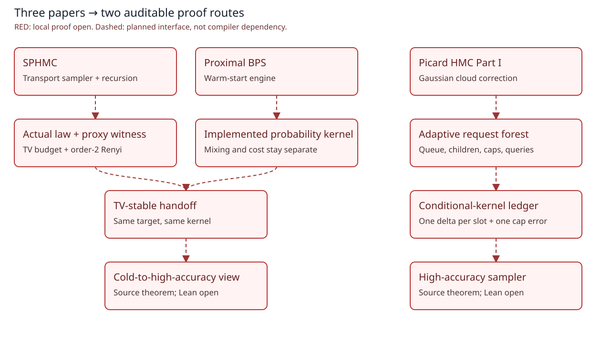

High-accuracy sampling: algorithms, recursive calls, and error ledgers
Three primary-paper cases and one composition view; an extension to, not a mutation of, the pinned 34-row SampleWiki snapshot.
Main theorem routes remain source-pinned plans. Per-declaration compilation and independent reviews are recorded in the linked Frontier Cells and semantic registry; they do not certify either full paper.
Smoothed Picard HMC and the proxy warm start
Producer: low-accuracy transport control, then an implementable proxy warm start.
Picard HMC Part I: Gaussian cloud correction
Recursive implementation route: turn Gaussian-cloud Picard updates into a finite sampler while keeping every adaptive call, cap event and replacement error auditable.
Proximal BPS: high accuracy from a warm start
Consumer: a Renyi-warm input becomes a high-accuracy position law through an augmented-state discrete chain.
Cold start to high accuracy: the producer–consumer contract
Composition view of SPHMC Theorem 1.3, not a third paper or an ASTIS novelty claim.
How the proposed proof graph changes
Keep the SPHMC-to-PBPS producer/consumer route, and add a separate Gaussian-cloud assembly lane in which adaptive tree size and conditional-kernel replacement error are first-class nodes. Share smoothing, Picard and kernel technology without identifying distinct source theorems.


Candidate bridge and reusable-hub roles, not computed centrality, proven novelty rankings or Lean implications.
- Chapters 5–7: low accuracy, warm starts and high accuracy
- Chapter 8: proximal sampling and conditional/RGO tools
- MCMC: augmented states, PDMP implementation, adaptive conditional kernels and nonreversible analysis
- Optimal transport: finite-p-moment couplings and Gaussian regularization
- Program verification: recursive request trees, deterministic caps and explicit accumulated-error ledgers
A future certified compression must retain measure, regularity, oracle, moment, warmness, implementation, adaptive-history, cap and cost side conditions. No category or functor certificate exists.
Expand this frontier in the interactive proof graph → · Inspect the candidate certificate bridge →
Reading and formalization order
Use the source-case cards as researcher-facing maps. For Picard HMC Part I, read the Section 6 call/error ledger before the detailed lemmas. Formalize dependency-ready common technology before algorithm assemblies; preserved textbook and companion frontiers are not reset.
12 reusable technology contracts and 3 next-packet candidates →
Attribution and source status
- Smoothed Picard Hamiltonian Monte Carlo — Fan Chen, Sinho Chewi, Jianfeng Lu, Matthew S. Zhang. 2609.06906v1. immutable arXiv version; not a local byte-hash certificate.
- Accelerated High-Accuracy Sampling from a Warm Start via the Proximal Bouncy Particle Sampler — Fan Chen, Sinho Chewi, Jianfeng Lu, Matthew S. Zhang. 2609.06905v1. immutable arXiv version; not a local byte-hash certificate.
- High-accuracy simulation of Picard HMC, part I: Gaussian cloud correction — Fan Chen, Sinho Chewi, Jianfeng Lu, Matthew S. Zhang. 2609.38710v1. immutable arXiv version; not a local byte-hash certificate.
These are ASTIS mathematical restatements and proof-route explanations, not reproduced paper prose. The pinned arXiv pages list the perpetual non-exclusive distribution license; ASTIS assumes no blanket right to republish them. No author endorsement or new Lean certificate is implied.